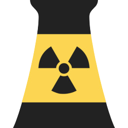
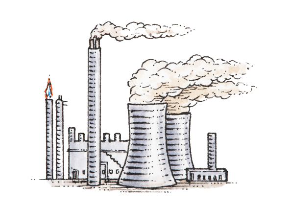
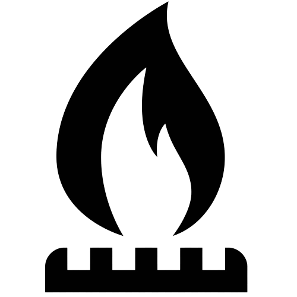

Quais métodos de energia são nocivos ao meio ambiente?
Nesta página você pode encontrar uma lista de métodos de energia nocivos ao meio ambiente! Leia para conhecer um pouco sobre cada uma delas!
-

Energia Nuclear
Energia nuclear ou energia atômica é a energia liberada em uma reação nuclear, ou seja, em processos de transformação de núcleos atômicos. Alguns isótopos de certos elementos apresentam a capacidade de se transformar em outros isótopos ou elementos por meio de reações nucleares, emitindo energia durante esse processo. Baseia-se no princípio da equivalência massa-energia, proposto por Albert Einstein, segundo a qual durante reações nucleares ocorre transformação de massa em energia. Foi descoberta por Otto Hahn e Lise Meitner com a observação de uma fissão nuclear depois da irradiação de urânio com nêutrons.A tecnologia nuclear tem como uma das principais finalidades gerar energia elétrica. Aproveitando-se do calor emitido na reação, para aquecer a água até se tornar vapor, assim movimentando uma turbina a vapor acoplada a um gerador. A reação nuclear pode acontecer controladamente em um reator de usina nuclear ou descontroladamente em uma bomba atômica (causando uma reação chamada reação em cadeia). A toxicidade baseia-se na radiação emitida pelas substâncias envolvidas na reação nuclear. Assim, tanto o material utilizado, quanto todo entorno serão fonte de radioatividade e, portanto, tóxicos. -

Energia fóssil
Combustíveis fósseis são combustíveis formados por meio de processos naturais, como a decomposição de organismos mortos soterrados . Os combustíveis fósseis contêm alta quantidade de carbono, usados para alimentar a combustão. São usados como combustíveis, o carvão mineral, gás natural e o petróleo. Os combustíveis fósseis são recursos não-renováveis, pois levam milhões de anos para se formarem, e as reservas desses combustíveis estão a esgotar-se, já que o consumo é maior que a produção. A queima de combustíveis fósseis produz cerca de 21,3 bilhões de toneladas de dióxido de carbono anualmente, e metade dessa produção atinge a atmosfera, já que os processos naturais só conseguem absorver metade dessa quantidade. A produção e uso dos combustíveis fósseis é a principal causa do aquecimento global e gera significativa poluição de vários tipos, com amplas repercussões negativas sobre o ambiente, a sociedade, a economia e a saúde humana. -

Energia à gás natural
O gás natural é uma mistura de derivados de combustíveis fósseis, formado quando camadas de animais soterrados ficam submetidos a intenso calor e pressão ao longo de milhares de anos, ou da biomassa quando está em decomposição. A energia que as plantas naturalmente absorvem da luz do Sol é armazenado em forma de carbono, em gás natural. É uma mistura de hidrocarbonetos leves encontrada no subsolo, na qual o metano tem uma participação superior a 70% em volume. A composição do gás natural pode variar bastante dependendo de fatores relativos ao campo em que o gás é produzido, processo de produção, condicionamento, processamento e transporte. O gás natural é um combustível fóssil e uma fonte de energia não renovável com uma alta emissão de gases de efeito estufa.